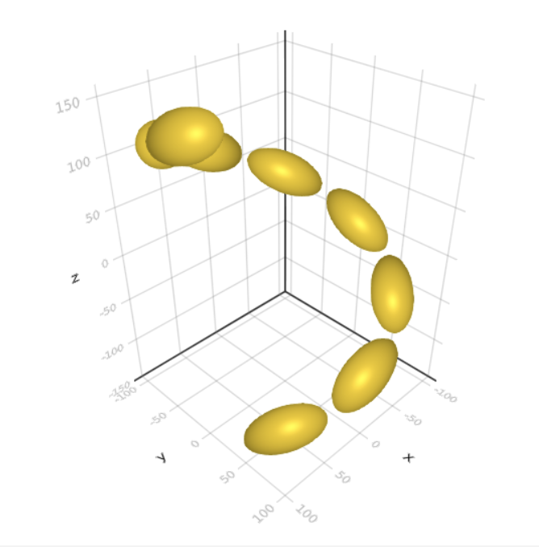
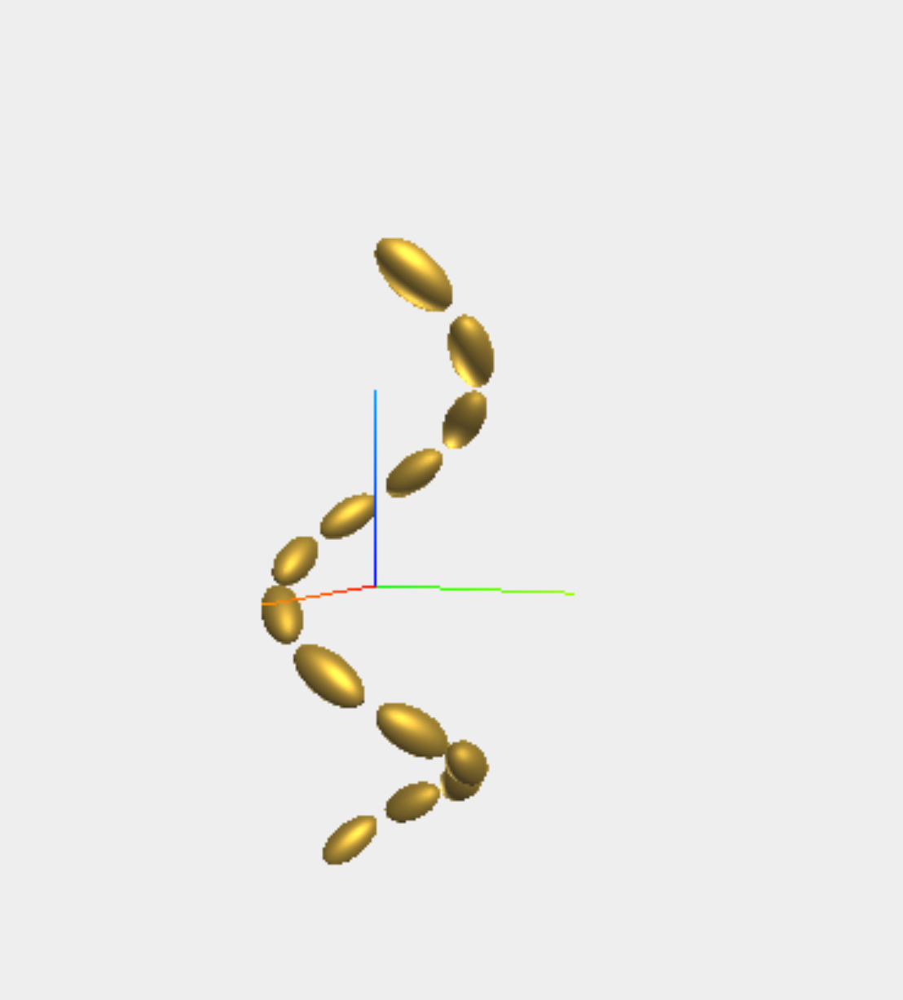

Visualisation of cluster geometries
Static 3D visualisations can be shown with a simple wrapper around Makie.meshscatter.
CoupledDipole.visualise_makie — Function visualise_makie(cl; colour=:gold)Static 3D visual of a cluster
Examples
cl = cluster_helix(8, 20, 20, 40, 100, 300, π/4, 0, "right")
visualise_makie(cl, colour = :silver)using CoupledDipole
using Makie
Makie.inline!(true)
cl = cluster_helix(8, 20, 20, 40, 100, 300, π/4, 0, "right")
visualise_makie(cl, colour = :gold)
We're hoping to use three.js to provide interactive 3D visualisations of the cluster geometries, but at present this functionality is not integrated with the Documentation or with the IDE. A basic wrapper is provided to generate self-contained html pages that can be viewed in a web browser.
CoupledDipole.visualise_threejs — Function visualise_threejs(cl; colour=:gold)Standalone interactive 3D visual of a cluster
Examples
cl = cluster_helix(8, 20, 20, 40, 100, 300, π/4, 0, "right")
visualise_threejs(cl)
# open cluster.html in browser